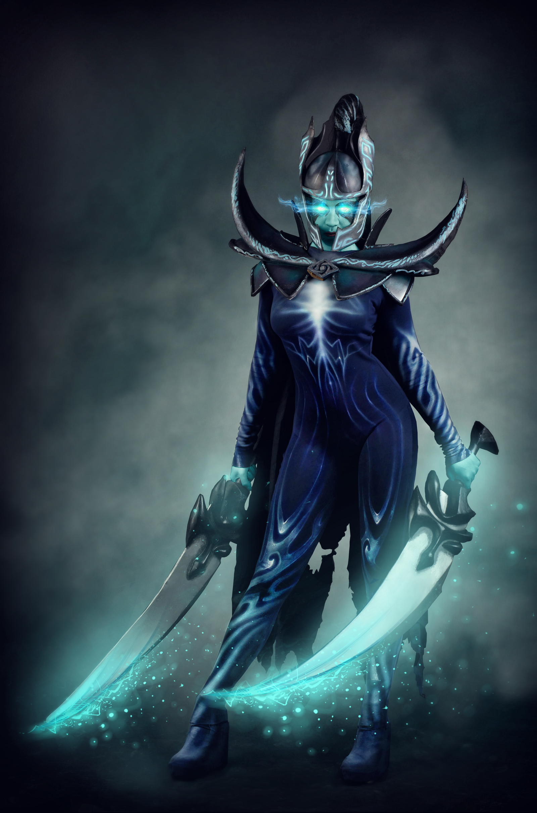
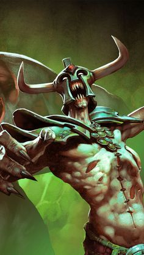
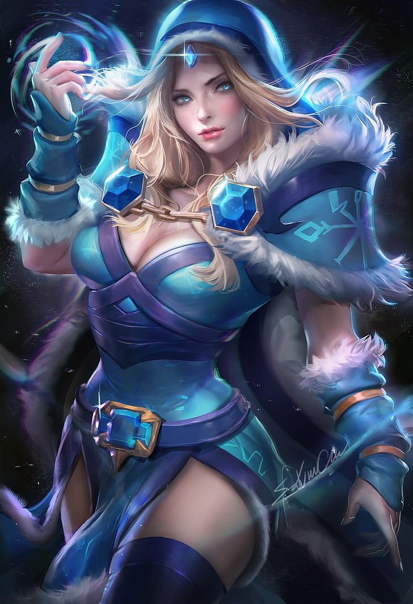

DotaMeta
DotaMeta

Ми хард керрі - ми принесемо команді перемогу, якщо будемо мати
потрібні предмети в потрібний час, я не буду тут багато розписувати,
ми формуємо крипів, вбиваємо ворогів на лайні або самі, або за
допомогою ганка, пакуємо слоти і тягнемо, не забуваємо брати участь
у пушах і замісах, а так само невеликих ганках, якщо ви впевнені в
їх успішності, в іншому випадку ви втратите фарм і будете марним.
Виглядаючи з нього для допомоги команді. швидко і ви помрете даремно
не завдавши шкоди,а шкода у нас дуже високий особливо,якщо ми
нормально запаковані.

Ведений піснею панахиди, Дердж йде через поле лайки, волаючи до
мертвих, щоб обернути їх проти живих. У битві він витягує сили
противників за допомогою Decay, перенаправляє життєві потоки всіх
навколишніх істот Soul Rip, ранячи ворогів і виліковуючи союзників.
Поки Undying поруч, над сутичкою підноситься жахіття Tombstone, що
обрушує на супротивників орди кровожерливих зомбі, що впадають у
сказ при вигляді ослабленої жертви. Але справжній жах ворог відчуває
лише тоді, коли Дердж звертається до Flesh Golem - огидна істота,
одна присутність якої посилює страждання навколишніх ворогів. Його
сморід уповільнює ворогів, а сам він трощить все навколо доти, доки
остання жива істота не здасться під натиском Undying.

Як вступ, я опишу причини, з яких персонаж завжди має
пристойне співвідношення пікрейту та вінрейту. Тут все дуже просто:
ЦМ – персонаж, на якому важко помилитися. Їй можна загуляти або
зайняти неправильну позицію, але це залежить від самого гравця, а не
від персонажа. Кристалочкою важко промахнутися скілами, у Рілай
дуже корисна майже в будь-якому матч-апе та лайн-апе аура. І так, за
суті, цим персонажем можна справді не робити нічого і
приносити мінімальну користь. Але це не наш шлях, ми будемо
суперкорисним саппортом-п'ятіркою, що вносить імпакт, навіть маючи десяток
смертей та півчобота в інвентарі.